Eğri Uydurma, Aradeğerleme (Interpolation)
Diyelim ki elimizde alttaki veri var.
x = np.arange(1,7)
y = np.array([10, 5.49, 0.89, -0.14, -1.07, 0.84])
plt.plot(x,y,'.')
plt.ylim(-2,12)
plt.xlim(0,7)
plt.savefig('compscieng_1_21_01.png')

Bu veriye istediğimiz kadar bükümü olan bir eğri nasıl uydururuz? "İstediğimiz kadar bükümü olan eğri" polinom çağrısı yapabilir.. Mesela bir polinom eğri,
$$ y = c_1 x^3 + c_2x^2 + c_3x + c_4 $$
olarak gösterilebilir. Mesela bazı gelişigüzel sabit değerler $c_1=1,c_2-20,c_3=1,c_4=-4$ sabitlerinden alttaki görüntü çıkar,
x2 = np.linspace(0,10,1000)
c_1 = 2.; c_2 = -20.; c_3 = 1.; c_4 = -4
y2 = c_1*x**3 + c_2*x**2 + c_3*x + c_4
plt.plot(x2,y2)
plt.savefig('compscieng_1_21_02.png')

Eğri iki kere bükülebiliyor çünkü formül küpsel. Karesel olsa sadece bir kere bükülebilirdi. Peki karesel, ya da küpsel ya da daha üst derecedeki polinomları veriye nasıl uydururuz? Acaba lineer regresyonu bir şekilde kullanabilir miyiz? Ama lineer regresyon, adı üstünde, "lineer", yani doğrusal. Doğrusal olmayan bir şeyi nasıl uyduracağız? Şimdi lineer regresyonun neyi uydurduğunu hatırlayalım,
$$ y = c_1 z_1 + c_2 z_2 + .. + c_nz_n $$
Bu çok boyutlu, her biri birer vektör olan $z_1,..,z_n$ ile tek vektör $y$ ilişkisini girdi olarak alıyor (üstteki formülü ya vektörsel işlem olarak ya da $y,z_i$ öğelerinin teker teker formüle geçildiği şekilde görebiliriz).
Acaba şöyle bir numara yapamaz mıyız? Eğer elimizdeki tek boyutlu veriyi alıp, onun tamamının bir kere karesini, bir kere küpünü, vs. ayrı ayrı alıp her sonucu sanki ayrı bir boyutlarmış gibi lineer regresyona verirsek, otomatik olarak eğri uydurmuş olmaz mıyız ?! Yani üstteki örnek için $z_1=x^3,z_2=x^2,z_3=x,z_4=1$ olacak, matris formunda,
$$ A = \left[\begin{array}{rrrr} x_1^3 & x_1^2 & x_1 & 1 \\ x_2^3 & x_2^2 & x_2 & 1 \\ \vdots & \vdots & \vdots & \vdots \\ x_m^3 & x_m^2 & x_m & 1 \end{array}\right] $$
ki $x_i$, $x$ vektörünün tek bir öğesini temsil ediyor. Gerisi bildiğimiz En Az Kareler yöntemi ile $Ax=b$'yi, ya da üstteki notasyona göre $Ac=y$ çözmek, $(A^TA)^{-1}A^Tc$ ile (tabii QR kullanmak daha iyi ama bu basit örnek için önemli değil). Baştaki örneği çözelim mesela
import scipy.linalg as lin
A = np.array([x**3, x**2, x, np.ones(len(x))]).T
res = np.dot(np.dot(lin.pinv(np.dot(A.T,A)),A.T),y)
print A, '\n\n', res
[[ 1. 1. 1. 1.]
[ 8. 4. 2. 1.]
[ 27. 9. 3. 1.]
[ 64. 16. 4. 1.]
[ 125. 25. 5. 1.]
[ 216. 36. 6. 1.]]
[ 0.03925926 0.42313492 -6.5032672 16.12666667]
Kütüphane çağrısı polyfit kullanırsak,
print np.polyfit(x,y,3)
[ 0.03925926 0.42313492 -6.5032672 16.12666667]
Tıpatıp aynı sonuç çıktı, çünkü büyük bir ihtimalle polyfit aynı
tekniği kullanıyor!
plt.plot(x,y,'.')
plt.ylim(-2,12)
plt.xlim(0,7)
yy = res[0]*x**3 + res[1]*x**2 + res[2]*x + res[3]
plt.plot(x,y,'.')
plt.hold(True)
plt.plot(x,yy)
plt.savefig('compscieng_1_21_03.png')
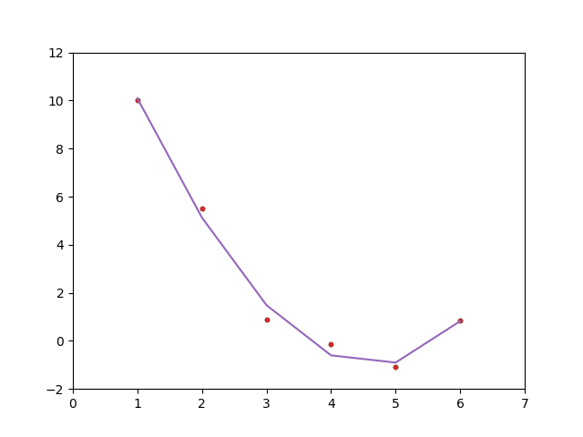
Uyum fena değil! Not: eğri kesikli çıktı çünkü çok az sayıda veri var.
Lagrange Aradeğerlemesi (Lagrange Interpolation)
En eski ve en yaygın uygulaması olan aradeğerleme fonksiyonlarından biri JL Lagrange tarafından yayınlanmış olandır. Pratik faydalarının yaninda bu tekniğin önemli bazı teorik sonuçları var, bu sebeple yaklaşık ya da olmayan entegrasyon ve türev alma teknikleri fonksiyonun Lagrange aradeğerlemesi ile temsilini baz alıyor [1, sf. 268].
Lagrange tekniğinin önemli bir özelliği yaklaşık temsil edilecek fonksiyondan seçilen değerler üzerinde, o noktalarda aynen verinin söylediği değerleri tekrar üretebilmesi. Yani eğer $f(x)$'i bir $f_h(x)$ ile yaklaşık temsil etmişsek, ve eğer $f(1) = 3$ ise, aradeğerleme sonrası $f_h(1) = 3$ olacaktır, ve bu üzerinden aradeğerleme yapılmış tüm veri noktaları için doğru olacaktır. Ayrıca bir diğer özellik üzerinden aradeğerleme yapılan $x$ değerlerinin gelişigüzel seçilebilmesi, eşit aralıkta alınma gibi bir zorunluluk yok.
Şimdi diyelim ki elde modellenen $f(x)$ için elde $n$ tane $x_1,x_2,...,x_n$ değeri var, ki
$$ f(x_i) = y_i, \qquad i=1,2,..,n $$
Çözmek istediğimiz problem mümkün olan az derecede olan bir polinom $P_m(x)$ yaratmak öyle ki bu polinom eldeki $(x_i,y_i)$ veri noktalarını temsil edebilsin, yani
$$ P_m(x_i) = y_i, \qquad i=1,2,..,n $$
Burada $m$ altsembolü dereceyi göstermek için kullanılıyor.
Daha önce söylediğimiz gibi veri noktalarında aradeğerleme ve veri aynı sonuçta olmalı.
Bu amaçla $n$ tane ayrı ayrı polinom $p_i(x)$ yaratacağız, ve bu polinomlar öyle tasarlanacak ki $x_i$ noktasında biri aktif olacak, diğerleri yokolacak. Bu bize bir delta fonksiyonunu hatırlatabilir, bu doğru, şu sonucu istiyoruz,
$$ p_i(x_j) = \delta_{ij} = \left( \begin{array}{ll} 1 & \textrm{eğer } j = i \\ 0 & \textrm{eğer } j \ne i \end{array} \right. $$
ki $\delta_{ij}$ Kronecker delta fonksiyonu. Eger $p_i(x)$'lerin $j \ne i$ olacak sekilde $x_j$ noktalarında yokolmasını istiyorsak, onu $(x-x_j)$ faktörlerinin bir çarpımı olarak yazabiliriz,
$$ p_i(x) = C_i \prod_{j \ne i} (x-x_j) $$
Sabit $C_i$ normalize edici bir değer. Üstteki çarpımda $(x-x_i)$ yok, onu dışarıda bırakarak $p_i$ elde ettik. Bir faktör hep dışarıda olacağı için $p_i(x)$ polinomunun derecesi hep $(n-1)$ olacaktır. Normalizasyon sabiti $C_i$ hesaplamak için $p_i(x_i)=1$ olduğunu hatırlayalım ve bu değeri elde etmek için $C_i = 1 / \prod_{j \ne i} (x_i - x_j)$ sabiti gerekecektir, o zaman
$$ p_i(x) = \frac {\prod_{j \ne i} (x - x_j)} {\prod_{j \ne i} (x_i - x_j)}, \quad i=1,2,..,n $$
Her $p_i(x)$ polinomu $x_i$ haricinde diğer her noktada yokolacağı için $P_m$ polinomu $p_i(x)$'lerin bir lineer kombinasyonu, toplamı olarak temsil edilebilir,
$$ P_m(x) = \sum_{i=1}^{n} p_i (x) y_i $$
Bir $x_j$ için hesap ne diyor?
$$ P_m(x_j) = \sum_{i=1}^{n} p_i(x_j) y_i = \sum_{i=1}^{n} \delta_{ij} y_i = y_j $$
Doğru gözüküyor. Genel formda şunu yazabiliriz,
$$ P_m (x) = \sum_{i=1}^{n} \frac{\prod_{j \ne i} (x - x_j)}{\prod_{j \ne i} (x_i - x_j)} $$
Eğer $n=2$ olsaydı, eldeki iki tane $(x_1,y_1)$ ve $(x_2,y_2)$ için
$$ P_1(x) = \frac{(x-x_2)}{(x_1-x_2)} y_1 + \frac{(x-x_1)}{(x_2-x_1)} y_2 $$
Bu tabii ki iki noktadan geçen düz bir çizgiyi temsil ediyor.
Eğer $n=3$ olsaydı, üç noktadan geçen bir parabol elde edilirdi,
$$ P_2(x) = \frac{(x-x_2)(x-x_3)}{(x_1-x_2)(x_1-x_3)} y_1 + \frac{(x-x_1)(x-x_3)}{(x_2-x_1)(x_2-x_3)} y_2 + \frac{(x-x_1)(x-x_2)}{(x_3-x_1)(x_3-x_2)} y_3 $$
Altta örnek olarak $\sin(5x)$'ten alınmış 8 veri noktası ile aradeğerleme yapan bir örnek görüyoruz,
def Lagrange(x, y, n, xi):
yi = 0e0
for i in range(1,n+1):
p = 1e0
for j in range(1,n+1):
if (j != i): p *= (xi - x[j])/(x[i] - x[j])
yi += p * y[i]
return yi
n = 8
ni = 100
x = [0]*(n+1)
y = [0]*(n+1)
# f(x) = sin(5*x), x degerleri gelisiguzel secilmis
x[1] = 0.15; x[2] = 0.2; x[3] = 0.3; x[4] = 0.5;
x[5] = 0.8 ; x[6] = 1.1; x[7] = 1.4; x[8] = 1.7
for i in range(1,n+1): y[i] = np.sin(5*x[i])
xx = []; yy = []; real = []
# x[1] ile x[8] arasinda esit aralikli x'ler yarat
# daha fazla nokta olsun
xis = np.linspace(x[1],x[-1],ni)
for i in range(1,ni+1):
xi = xis[i-1]
yi = Lagrange(x,y,n,xi)
xx.append(xi)
yy.append(yi)
real.append(np.sin(5*xi)+0.02)
xx = np.array(xx)
yy = np.array(yy)
real = np.array(real)
plt.plot(xx,yy)
plt.plot(x,y)
plt.plot(xx,real,'--')
plt.legend(['Lagrange',u'Seçilen Noktalar','Gerçek'])
plt.savefig('compscieng_app20cfit1_01.png')
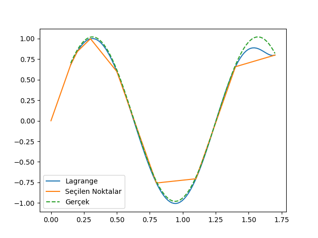
İlmikler (Knots)
[4], [5], yazılarındaki konuları genişletelim. Bu yazılardan biliyoruz ki basit regresyon
$$ y_i = \beta_0 + \beta_1 x_i + \epsilon_i$$
denklemini temel alıyor, onu veriye uyduruyor. Bu uydurma için kullandığımız $A,x,b$ matrisleri, vektörleri var. Sihirli formülü biliyoruz,
$$ \hat{y} = X(X^TX)^{-1}X^Ty $$
Şimdi bu formüldeki $X$ içindeki değerleri farklı "bazlar" olarak görmek faydalı olacaktır. Tek değişkenli durumda mesela bu baz
$$ X = \left[\begin{array}{cc} 1 & x_1 \\ \vdots & \vdots \\ 1 & x_n \end{array}\right] $$
Eğer karesel bir formülü uyduruyorsak, yani
$$ y_i = \beta_0 + \beta_1x_i + \beta_2x_i^2 + \epsilon_i $$
baz
$$ X = \left[\begin{array}{ccc} 1 & x_1 & x_1^2\\ \vdots & \vdots & \vdots \\ 1 & x_n & x_n^2 \end{array}\right] $$
olur. Bu bakış açısını yorumlamak zor değil, regresyonun temeli değişkenlerin katsayılarını bulmaktır, o zaman $1,x,x^2$ değişkenleri için de, ya da herhangi bir başka baz bulmak için aynı teknik kullanılabilir çünkü karesel, küpsel bazlar kullanıyor olsak bile bu değerleri önceden hesaplayıp matrise koyduğumuz için kullandığımız sihirli formül hala lineer bir problemi çözüyor. Hala değişkenler var, onlar bazı katsayılar ile çarpılıp toplanarak veriye uydurulacak, ve sihirli formül bu en optimal katsayıları bulacak.
Baz fikri ile devam edelim, alttaki veriye bakalım (gösterilen çizgilerin daha bulunmamış olduğunu varsayalım),
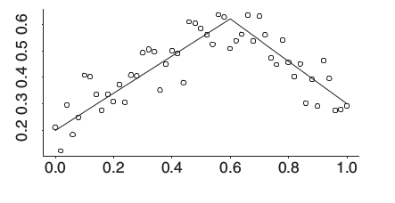
Bu bir kırılmış değnek (broken stick) modeli, $x=0.6$ öncesinde belli bir eğimi olan bir düz çizgi var, sonrasında başka bir eğrisi olan bir düz çizgi var. Kırılma noktasını biliyoruz, ya da regresyonun hangi noktadan geçmesini istediğimizi, ilmik noktasını (knot) biliyoruz, bu durumda baz nedir?
$$ (x-0.6)_{+} $$
fonksiyonudur. Tanımdaki altsimge + şunu ifade eder: herhangi bir sayı $u$ eğer pozitif ise $u_{+} = u$'dur, eğer değil ise $u_{+} = 0$ değerine sahiptir. Bunun amaçlarımız için mükemmel bir baz fonksiyonu olacağını görebiliyoruz,
$$y_i = \beta_0 + \beta_1x_i + \beta_{11}(x_i-0.6)_{+} + \epsilon_i $$
Bu fonksiyonun $0.6$'ya kadar belli bir eğimi olacak, fakat $0.6$ ardından bu eğime bir "ek" yapılmaya başlanacak, $\beta_{11}$ bu ekin ne kadar olacağını yakalayacak.
O zaman sihirli formüle verilecek matris
$$ X = \left[\begin{array}{ccc} 1 & x_1 & (x_1 - 0.6)_{+} \\ \vdots & \vdots & \vdots \\ 1 & x_n & (x_n - 0.6)_{+} \end{array}\right] $$
Regresyon çözümü bize her baz için gerekli katsayıyı (kesiyi, eğimi) verecektir.
Daha abartarak (!) bir sürü ilmik üzerinden bir sürü baz tanımlayabilirdik, o zaman ufak ufak pek çok düz çizgiyi veriye uydurmak mümkün olurdu, mesela
$$ X = \left[\begin{array}{cccccc} 1 & x_1 & (x_1 - 0.5)_{+} & (x_1 - 0.55)_{+} & \dots & (x_1 - 0.96)_{+}\\ \vdots & \vdots & \vdots & \ddots & \vdots \\ 1 & x_1 & (x_1 - 0.5)_{+} & (x_1 - 0.55)_{+} & \dots & (x_1 - 0.96)_{+} \end{array}\right] $$
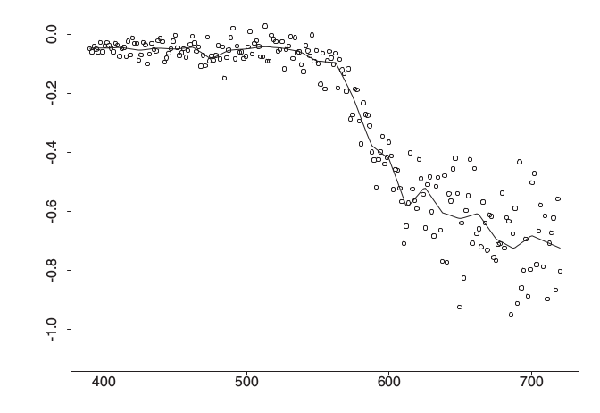
(Resimde ilmikler 400,500,.. gibi değerlerde, yani bazlar $(x_1-500)_{+}$ şeklinde olurdu)
Bilinen tek ilmik üzerinden en basit örneği görelim,
import statsmodels.formula.api as smf
import pandas as pd
df = pd.read_csv('../../tser/tser_chgpt/2inclines.csv')
reslin = smf.ols('y ~ 1 + x + I((x-55)*(x>55))', data=df).fit()
print reslin.summary()
OLS Regression Results
==============================================================================
Dep. Variable: y R-squared: 0.957
Model: OLS Adj. R-squared: 0.956
Method: Least Squares F-statistic: 1081.
Date: Thu, 12 Jan 2017 Prob (F-statistic): 4.96e-67
Time: 14:27:42 Log-Likelihood: -243.44
No. Observations: 100 AIC: 492.9
Df Residuals: 97 BIC: 500.7
Df Model: 2
Covariance Type: nonrobust
==========================================================================================
coef std err t P>|t| [95.0% Conf. Int.]
------------------------------------------------------------------------------------------
Intercept 15.7364 0.701 22.447 0.000 14.345 17.128
x 0.2956 0.019 15.422 0.000 0.258 0.334
I((x - 55) * (x > 55)) 0.3530 0.040 8.926 0.000 0.275 0.432
==============================================================================
Omnibus: 15.710 Durbin-Watson: 2.312
Prob(Omnibus): 0.000 Jarque-Bera (JB): 4.411
Skew: -0.025 Prob(JB): 0.110
Kurtosis: 1.972 Cond. No. 148.
==============================================================================
Warnings:
[1] Standard Errors assume that the covariance matrix of the errors is correctly specified.
df.set_index('x').y.plot()
plt.savefig('compscieng_app20_07.png')

Bulunan katsayılar üstteki grafiğe uyuyor.
İlmik Seçmek
[6, sf. 65] bu tekniği bir adım ilerletiyor; eğer ilmik seçmek isteseydik ne yapardık? Bu durumda üstteki gibi pek çok mümkün bazı regresyona verirdik, ama bu sefer regülarizasyon üzerinden eğer ise yaramayanları cezalandırırsak, çok küçülen katsayılar bizim için önemsiz sayılacaktır ve katsayısı yüksek olanlar elde tutulabilir. Regularizasyon icin {\em Istatistik, Regresyon, Ridge, Lasso, Çapraz Sağlama, Regularize Etmek}.
[6]'in cezalandırma formülasyonu bize bir Ridge regresyonu veriyor. Alttaki veride denedik,
import pandas as pd
df = pd.read_csv('../../tser/tser_chgpt/cave.csv')
df.C.plot()
plt.savefig('compscieng_app20_06.png')
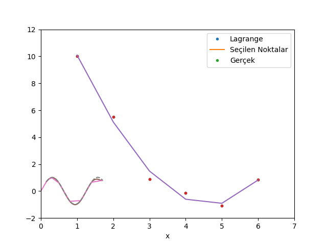
import statsmodels.formula.api as sm
f = "C ~ 1 + Temp + I((Temp > 10)*(Temp-10)) + I((Temp > 15)*(Temp-15)) +" + \
"I((Temp > 20)*(Temp-20)) + I((Temp > 25)*(Temp-25)) +" + \
"I((Temp > 30)*(Temp-30)) + I((Temp > 35)*(Temp-35)) +" + \
"I((Temp > 40)*(Temp-40)) + I((Temp > 45)*(Temp-45)) +" + \
"I((Temp > 50)*(Temp-50)) + I((Temp > 55)*(Temp-55)) "
model = sm.ols(formula=f, data=df).fit_regularized(L1_wt=0.0)
print model.summary()
OLS Regression Results
==============================================================================
Dep. Variable: C R-squared: 0.962
Model: OLS Adj. R-squared: 0.956
Method: Least Squares F-statistic: 177.4
Date: Thu, 12 Jan 2017 Prob (F-statistic): 2.03e-50
Time: 13:13:45 Log-Likelihood: -185.82
No. Observations: 90 AIC: 395.6
Df Residuals: 78 BIC: 425.6
Df Model: 11
Covariance Type: nonrobust
================================================================================================
coef std err t P>|t| [95.0% Conf. Int.]
------------------------------------------------------------------------------------------------
Intercept 31.8192 1.354 23.494 0.000 29.123 34.515
Temp 0.3800 0.204 1.863 0.066 -0.026 0.786
I((Temp > 10) * (Temp - 10)) -0.0764 0.497 -0.154 0.878 -1.065 0.912
I((Temp > 15) * (Temp - 15)) -0.0524 0.651 -0.081 0.936 -1.348 1.243
I((Temp > 20) * (Temp - 20)) -0.0027 0.673 -0.004 0.997 -1.342 1.337
I((Temp > 25) * (Temp - 25)) -0.1210 0.674 -0.179 0.858 -1.463 1.221
I((Temp > 30) * (Temp - 30)) -0.3380 0.674 -0.501 0.618 -1.681 1.005
I((Temp > 35) * (Temp - 35)) -0.0869 0.674 -0.129 0.898 -1.429 1.256
I((Temp > 40) * (Temp - 40)) 0.1147 0.674 0.170 0.865 -1.227 1.457
I((Temp > 45) * (Temp - 45)) 0.0320 0.670 0.048 0.962 -1.302 1.366
I((Temp > 50) * (Temp - 50)) -0.0149 0.598 -0.025 0.980 -1.205 1.176
I((Temp > 55) * (Temp - 55)) -0.6336 0.295 -2.144 0.035 -1.222 -0.045
==============================================================================
Omnibus: 7.572 Durbin-Watson: 1.924
Prob(Omnibus): 0.023 Jarque-Bera (JB): 7.180
Skew: -0.575 Prob(JB): 0.0276
Kurtosis: 3.770 Cond. No. 691.
==============================================================================
Warnings:
[1] Standard Errors assume that the covariance matrix of the errors is correctly specified.
İstatistiki modelleri irdelemek bilimden ziyada biraz sanattır, fakat üstteki sonuçlarda (Temp-30) katsayısının mutlak değerinin orta bölgedeki diğerlerine göre daha yüksek olduğunu görüyoruz. Grafiğe bakılınca bu mantıklı gözüküyor.
Alternatif İlmik İfadeleri
Bazen sayısal hesaplarda üstte gördüğümüz $u_{+}$ ifadesinin $\max(0,x-a)$ ile formülize edildiğini görüyoruz. Yani,
$$ y = \beta_0 + \beta_1 x + \beta_{2}(x-a)_{+} + \beta_{3}(x-b)_{+} + ... $$
yerine
$$ y = \beta_0 + \beta_1 x + \beta_{2}\max(0,x-a) + \beta_{3}\max(0,x-b) + ... $$
ki $a,b$ ilmik noktaları. Bu kullanım da aynı sonuç veriyor, düşünürsek $\max$ ifadesi $x$ değeri $a$ değerini geçinceye kadar 0, ondan sonra $x-a$ verecek, bu da $u_{+}$ gibi bir kullanım ile aynı.
Mesela
a,b,c,d = (1, -1.4, 2, 2.5)
x = np.linspace(0,5,100)
knots = [2,3,4]
def f(x):
return a + \
b*np.max([0,x-knots[0]]) + \
c*np.max([0,x-knots[1]]) + \
d*np.max([0,x-knots[2]])
y = np.array([f(xx) for xx in x])
plt.plot(x,y,'.')
plt.savefig('compscieng_app20_10.png')
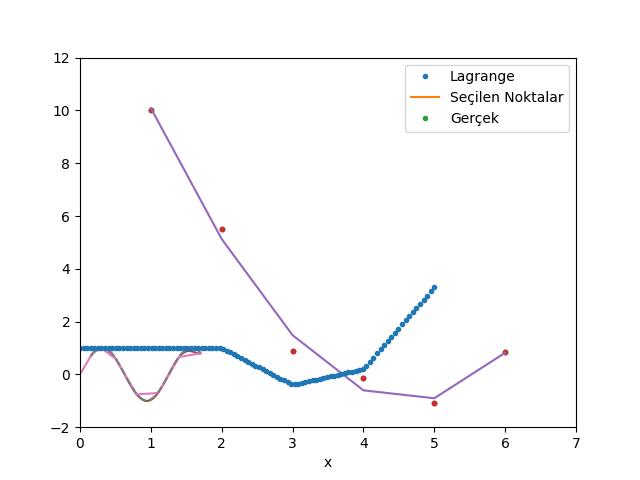
Rasgele bazı ağırlıklarla $x=2,3,4$ noktalarında aktif olan ilmiklerle üstteki grafiği çıkarttık. Regresyon bağlamında bir optimizasyon rutinine (illa lineer regresyon olması gerekmez) veriye bakarak bir hatanın minimize edilmesi üzerinden en optimal $a,b,c,d$ ağırlıklarını buldurmak ta mümkündür.
Peki $\max$ yerine baska bir fonksiyon kullanabilir miydik? $\max$'in sonucta yaptigi belli bir esik degerinden once 0 sonrasinda baska bir deger vermek degil midir? Evet. Bu tur bir "karar" fonksiyonu sigmoid ile de elde edilebilir.
alpha = 5.0
def sig(x,a):
return 1/(1+np.exp(-alpha*(x-a)))
x = np.linspace(-5,5,100)
y = sig(x,0)
plt.plot(x,y)
plt.savefig('compscieng_app20_11.png')
y = sig(x,3)
plt.plot(x,y)
plt.savefig('compscieng_app20_12.png')
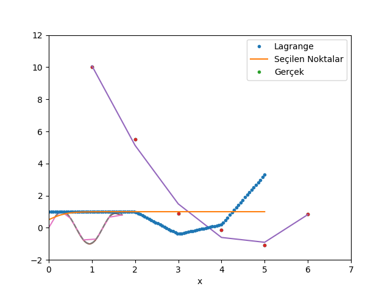 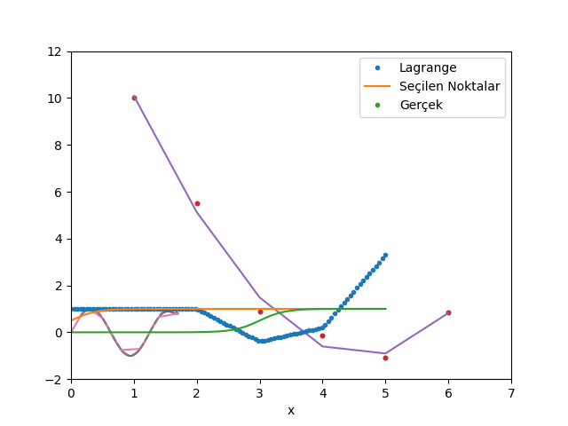
Normal sigmoid üst soldaki, fakat $x-a$ ile onu da istediğimiz noktaya kaydırabiliyoruz. $\alpha$ parametresi 0'dan 1'e geçişin ne kadar sert olduğunu kontrol ediyor.
rho = 7.0
def sig2(x,a):
return (x-a)*1/(1+np.exp(-rho*(x-a)))
a,b,c,d = (1, -1.4, 2, 2.5)
x = np.linspace(0,5,100)
knots = [2,3,4]
def f(x):
return a + \
b*sig2(x,knots[0]) + \
c*sig2(x,knots[1]) + \
d*sig2(x,knots[2])
y = np.array([f(xx) for xx in x])
plt.plot(x,y)
plt.savefig('compscieng_app20_13.png')
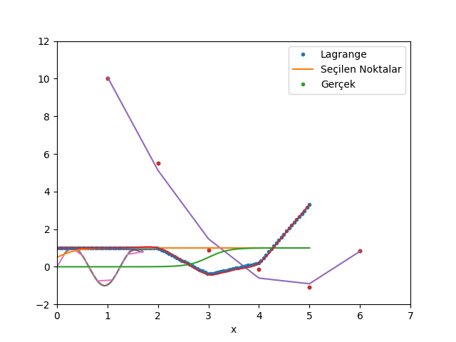
Daha yumuşak, pürüzsüz bir fonksiyon elde etmiş olduk. Bu birleşik eğrinin türevini almak ta daha kolay olacaktır. Gerçi otomatik türev paketleri artık içinde $\max$ bile olan ifadelerin türevini alabiliyor, fakat üsttekinin sembolik türevi rahatça alınabilir, bu seçeneğin elde olması iyidir.
Küpsel Spline Eğrileri (Cubic Splines)
Baz seçerken elimizde pek çok seçenek var, mesela küpsel spline eğrileri uydurmak için
$$ (1,x,x^2,x^3,(x-k_1)_{+}^3,(x-k_2)_{+}^3,(x-k_3)_{+}^3,.. )$$
gibi bir baz kullanabiliriz, ilmikler $k_1,..,k_K$ olarak gider, genel olarak
$$ f(x) = \beta_0 + \beta_1x + \beta_2 x^2 + \beta_3 x^3 + \sum_{s=1}^{K} \beta_{3+s} (x-k_s)^3_{+} $$
formülü verilir. Bu baza kırpılmış güç bazı (truncated power basis) ismi de veriliyor.
Bir örnek üzerinde görelim,
import pandas as pd
dfcube = pd.read_csv('cube.csv')
df2 = dfcube.set_index('x')
df2.y.plot()
plt.savefig('compscieng_app20_09.png')
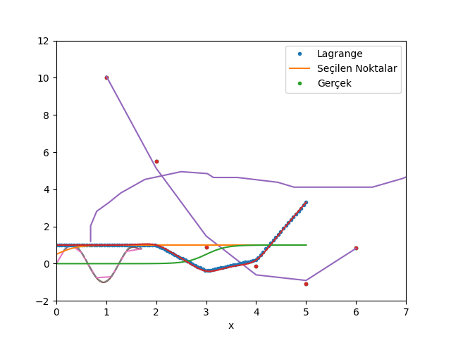
İlmik noktalarını seçelim, 8 ve 13 noktasında olsun,
import pandas as pd
import statsmodels.api as sm
dfcube = pd.read_csv('cube.csv')
dfcube.loc[:,'1'] = 1.
dfcube.loc[:,'x2'] = dfcube.x**2
dfcube.loc[:,'x3'] = dfcube.x**3
k1 = dfcube.x-8; dfcube.loc[k1>0,'k1'] = k1**3
k2 = dfcube.x-13; dfcube.loc[k2>0,'k2'] = k2**3
dfcube = dfcube.fillna(0)
X = dfcube[['1','x','x2','x3','k1','k2']]
y = dfcube.y
f = sm.OLS(y,X).fit()
print f.params
1 1.586781
x 1.747705
x2 -0.381304
x3 0.030443
k1 -0.092883
k2 0.138559
dtype: float64
dfcube['yy'] = f.params[0]*dfcube['1'] + f.params[1]*dfcube.x + \
f.params[2]*dfcube.x2 + f.params[3]*dfcube.x3 + \
f.params[4]*dfcube.k1 + f.params[5]*dfcube.k2
dfcube['y'] = y
df2 = dfcube.set_index('x')
df2[['y','yy']].plot()
plt.hold(True)
plt.axvline(x=8,color='c')
plt.hold(True)
plt.axvline(x=13,color='c')
plt.savefig('compscieng_app20_08.png')
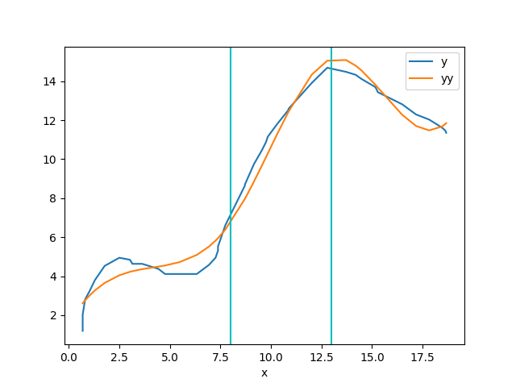
Kısıtlanmış Küpsel Spline Eğrileri (Restricted Cubic Splines)
Üstteki metot iyi işliyor, fakat bazen başta ve sondaki parçaların eğri değil tam düz olması istenebiliyor, yani "eteklerde" düzleştirme amaçlanıyor. Bu özel formülasyon için bkz. [3, sf. 24]. Bu yaklaşımı baz alan kod [1]'in Python çevrimini altta veriyoruz. Metota verilen isim kısıtlanmış küpsel spline eğrileri, ya da doğal spline eğrileri (natural splines).
import scipy.linalg as lin
def rcs(x,y,knots):
n = len(y)
k = knots
X1 = x
q = len(k)-1
myX=np.zeros((n,len(knots)-2))
for j in range(q-1):
tmp1 = (x-k[j])**3 * (x>k[j])
tmp2 = (x-k[q-1])**3 * (x>k[q-1])*(k[q]-k[j])
XX= tmp1-tmp2/(k[q]-k[q-1])
tmp1 = (x-k[q])**3 * (x>k[q])
tmp2 = (k[q-1]-k[j])
XX = XX+tmp1*tmp2/(k[q]-k[q-1])
myX[:,j]=XX
X = np.hstack( (np.ones((n,1)),np.reshape(X1,(n,1)),myX) )
bhat = np.linalg.lstsq(X,y)[0]
bhatt = np.zeros(len(knots)+1)
bhatt[len(bhat)] = (bhat[2:]*(k[0:-2]-k[-1])).sum()
bhatt[len(bhat)] = bhatt[len(bhat)] / (k[-1]-k[-2])
bhatt = np.hstack([bhatt, 0])
bhatt[-1] = (bhat[2:]*(k[0:-2]-k[-2])).sum()
bhatt[-1] = bhatt[-1] / (k[-2]-k[-1])
bhat = np.hstack((bhat, bhatt[-2:]))
return bhat
def speval(x,coefs,knots):
tmp = coefs[0] + coefs[1]*x
for k in range(len(knots)):
tmp = tmp + coefs[k+2]*((x-knots[k])**3)*(x>knots[k])
return tmp
import pandas as pd
x = np.random.randn(300)*np.sqrt(2)
e = np.random.randn(300)*np.sqrt(0.5)
y = np.sin(x)+e
df = pd.DataFrame([x,y]).T
df.columns = ['x','y']
df = df.sort_index(by='x')
print df.head()
knots=np.array([-5.5938, -3.7732, -1.9526, -0.1320, 1.6886, 3.5092, 5.3298]);
bhat = rcs(df.x,df.y,knots)
print bhat
df['spline'] = speval(df.x, bhat, knots)
df2 = df.set_index('x')
df2[['y','spline']].plot()
plt.hold(True)
for k in knots: plt.plot(k,speval(k,bhat,knots),'rd')
plt.savefig('compscieng_app20_01.png')
x y
156 -4.037867 0.786392
214 -3.442141 0.716684
101 -3.331777 0.400504
249 -3.178510 -1.019875
235 -3.131058 0.309575
[ 2.60209869 0.37061018 -0.09614395 0.3059325 -0.30256291 -0.05312331
0.33303297 -0.24924314 0.06210785]
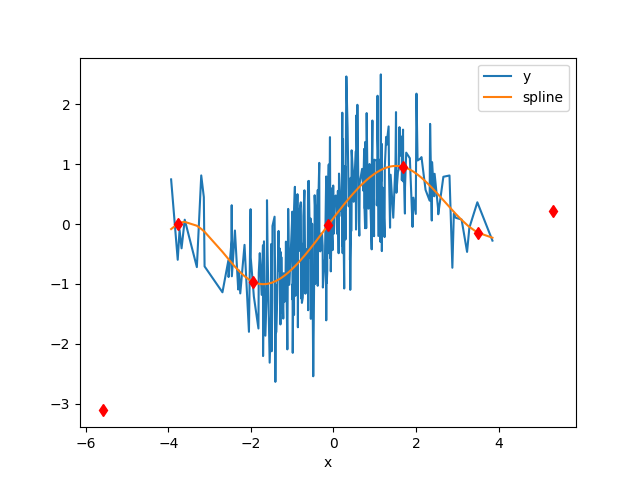
import pandas as pd
dfcube = pd.read_csv('cube.csv')
dfcube = dfcube.sort_index(by='x')
knots=np.array([3,5,8,14,14.5]);
bhat = rcs(dfcube.x,dfcube.y,knots)
print bhat
dfcube['spline'] = speval(dfcube.x, bhat, knots)
df2 = dfcube.set_index('x')
df2[['y','spline']].plot()
plt.hold(True)
for k in knots: plt.plot(k,speval(k,bhat,knots),'rd')
plt.savefig('compscieng_app20_03.png')
[ 3.16368016 0.17418578 0.02336622 -0.01432746 -0.05277535 0.42087813
-0.37714154]
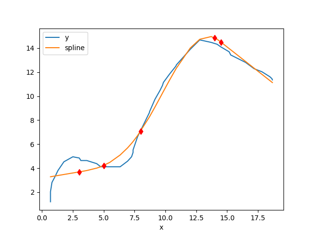
Spline Eğrileri
Diyelim ki elimizde 4 $x_i,y_i$ noktası var, ve bu noktalardan geçen, hepsinden kesinlikle geçen, yaklaşıksal bir eğri oluşturmak istiyoruz. Spline yöntemi her iki nokta arasını farklı bir küpsel (üçüncü derece) polinom ile temsil etmektir. Tekrar dikkat: tüm noktaları temsile edebilecek farklı polinomları toplamıyoruz, her aralıkta başka bir polinom fonksiyonu parçasını devreye sokuyoruz. Parçalar niye küpsel olarak seçildi? Çünkü küpsel bir eğri yeterince kavis sağlayabilir ve aynı zamanda çok fazla inişli çıkışlı, sivri değildir, yeterince pürüzsüz bir eğrinin ortaya çıkmasını sağlar.

Her $i=0,..,n+1$ için
$$ p(x) = p_i(x) = a_i + b_i(x-x_i) + c_i(x-x_i)^2 + d_i(x-x_i)^3 \qquad (1) $$
kullanalım. Noktalar $x_i$ olarak gösteriliyor, ve her noktada aktif olan bir $p_i$ spline olacak, o noktadan bir sonrakine kadar eğriyi bu $p_i$ tanımlayacak. Noktaların sayısını $n$ yerine $n+1$ olarak aldık böylece $n$ eğri parçası ile çalışmamız mümkün olacak. Her spline bir küpsel polinom ise niye bu küpsel polinomu en basit şekliyle
$$ p(x) = a_i + b_ix + c_ix^2 + d_ix^3 $$
olarak tanımlamadık? Çünkü iki üstteki form ile çalışmak daha rahat. Mesela, eğer $x$ için $x_i$ değrini verirsek, ki bu $x_1$ ya da $x_2$ olabilirdi, o zaman parantez içinde $x_i - x_i$ sayesinde tüm terimler sıfır oluyor, geriye sadece $a_i$ kalıyor.
Parçaların uçlarının birbirini tutması, ve tüm şeklin sürekli, akışkan bir şekilde gözükmesi için ise birkaç koşulu bizim tanımlamamız, ve zorlamamız gerekli. Önce en basit olanı: bir önceki parça ile bir sonraki parça orta nokta üzerinde aynı değere sahip olmalı. $i=1,..,n+1$ için
$$ p_i (x_{i+1}) = p_{i+1}(x_{i+1}) $$
Bir diğer basit gereklilik, her $x_i$'ye tekabül eden spline fonksiyonun elimizdeki $y_i$ değerini vermesi,
$$ p_i(x_i) = y_i $$
"Tüm noktalardan kesinlikle geçmeli" demiştik. Son parça bir istisna oluşturuyor, bu son parçanın fonksiyonu hem son noktayı, hem de ondan bir önceki nokta için kullanılmalı, bir önceden en sona kadar aynı fonksiyon üzerindeyiz.
$$ p_{n}(x_n) = y_{n+1} $$
Sistemi daha detaylı olarak görmek gerekirse, tüm denklemleri yazalım,
$$ p_1(x) = a_1 + b_1(x-x_1) + c_1(x-x_1)^2 + d_1(x-x_1)^3$$
$$ p_2(x) = a_2 + b_2(x-x_2) + c_2(x-x_2)^2 + d_1(x-x_2)^3$$
$$ \vdots $$
$$ p_n(x) = a_n + b_n(x-x_n) + c_n(x-x_n)^2 + d_3(x-x_n)^3$$
Üç noktalı şöyle bir grafik düşünelim,
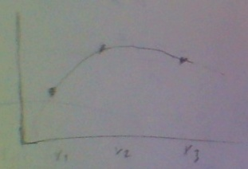
Üstte bahsettiğimiz gibi, $p_1(x_1) = a_1 = y_1$ olacak, ve tüm indisler için bu geçerli. Ayrıca $x_2$ noktasında bir önceki parça ve sonraki parça aynı değere sahip olmalı demiştik, yani mesela $p_1$'in sonunda (üstteki ilk parça) $x_2$ noktası vardır, ve aynı noktada $p_2$ başlayacaktır, o noktada $$ p_1(x_2) = a_1 + b_1h_1 + c_1h_1^2 + d_1h_1^3 $$
ve bu denklem $p_2(x_2) = a_2 = y_2$'ye eşit. Bir de, daha önce gördük, $a_1 = y_1$ ise, o zaman
$$ y_2 = p_1(x_2) = y_1 + b_1h_1 + c_1h_1^2 + d_1h_1^3 $$
haline gelir. Hepsini birarada yazıyoruz ($y$'yi sağ tarafa aldık)
$$ y_1 + b_1h_1 + c_1h_1^2 + d_1h_1^3 = y_2 \qquad (2) $$
$$ y_2 + b_2h_2 + c_2h_2^2 + d_2h_2^3 = y_3 $$
$$ \vdots $$
$$ y_n + b_nh_n + c_nh_n^2 + d_nh_n^3 = y_n $$
ki $h_1 \equiv x_2 - x_1$, $h_2 \equiv x_3 - x_2$ olarak tanımladık, $\equiv$ işareti "tanımlamak (defined as)" anlamına geliyor, $h$ harfi bir tür kısaltma olarak kullanıldı. Fakat kesintisizlik için parçaların uçlarının bitişmesi yeterli değil. Mesela alttaki figürün de uçları birleşiktir,
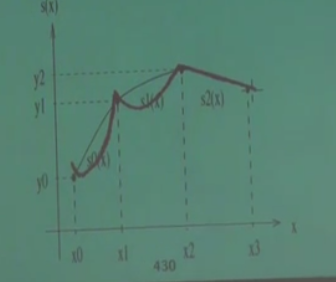
Demek ki ek bazı şartlar lazım. Bu ek şart "süreklilik" olabilir. Mesela alttaki örnek sürekli değildir.

Ya da daha iyisi, fonksiyonun her noktada "türevi alınabilir" olma şartı. Mesela altta koyu yuvarlaklı gösterilen noktada fonksiyonun türevi alınamaz.
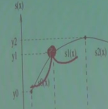
O zaman şartı koyalım -- Fonksiyonun her noktasında, ikinci türev sürekli alınabilmeli. Bu çok ağır / net bir şart aslında, ve hakikaten çok pürüzsüz (smooth) fonksiyonların oluşmasına sebep oluyor. Şimdi bunun ne anlamına biraz daha yakından bakalım. Biliyoruz ki futbol sahalarının etrafında koşu alanı vardır. Bu alan şöyledir.

Bu şekil iki ayrı figürün birleşimidir aslında, düz çizgiler ve iki tane yarı çember. Üstteki düz çizgili kısım sonsuz kere türevi alınabilir bir fonksiyondur. Değil mi? Düz çizgi sabit bir sayıdır, 1. türev sıfır, ikinci türev yine sıfır, böyle gider. Peki yarı çember olan kısımlar? Aynı şekilde. Peki her noktada durum böyle midir? Kritik noktalar ufak yuvarlaklarla gösterilen yerler (altta)

Bu noktalarda kaç kere "sürekli türevler" alınabilir? Cevap, sadece bir kere. Çünkü iki kere türev alınınca ne olacağına bakalım, düz kısımda ikinci, üçüncü, vs. türev sıfır. Peki yarı çember? Onun ikinci türevi sıfır olmayan sabit bir sayı. O zaman fonksiyonun tamamının (düz çizgi ve yarı çemberin beraber) 2. türevini grafiklesek, şöyle bir şekil ortaya çıkardı,

ve bu grafikte görüyoruz ki bir zıplama var. Bu zıplama yüzünden süreklilik (2. türevde) bozulmuş oldu. O zaman spline düzgün, pürüzsüz olsun istiyorsak, her noktada, yani bağlantı noktalarında, sağdaki ve soldaki parçanın birinci ve ikinci türevinin aynı olması şartını koyabiliriz, o zaman bu noktalarda fonksiyonun tamamı iki kere sürekli türevi alınabilir hale gelir. Parçaların kendisi üzerinde bu şartı tanımlamaya gerek yok, çünkü orada polinom kullanacağımızı belirttik zaten, polinomlar sonsuz kere sürekli türevi alınabilen objelerdir.
Denklem sistemimize iki tane daha şart gerekiyor. Bu şartlar fonksiyonun ilk noktada ve son noktada ikinci türevinin sıfır olması şartı olabilir. Her hangi yöndeki bir çizgi $y = ax + b$'nin iki kere türevi alınınca sıfır gelir, yani bu şart fonksiyonumuzun son noktalarda, fonksiyonun "aşağı yukarı aynı yönde" olacak şekilde düz olarak devam etmesi anlamına geliyor. Yaklaşıksal bağlamda fena bir şart değil.
O zaman ana formüllerimize dönelim, ve mesela $p_1(x),p_2(x)$'in türevini alalım,
$$ p_1'(x) = b_1 + 2c_1h_1 + 3d_1h_1^2 $$
$$ p_2'(x) = b_2 + 2c_2h_2 + 3d_2h_2^2 $$
$$ \vdots $$
Türevleri eşitleyelim $p_1'(x_2) = p_2'(x_2)$.
$$ p_1'(x_2) = b_1 + 2c_1h_1 + 3d_1h_1^2 $$
$$ p_2'(x_2) = b_2 $$
Üstteki niye sadece $b_2$ oldu? Çünkü $x_i-x_i$ numarası onun için de geçerli, geriye sadece $b_2$ kaldı. Hepsi bir arada
$$ b_1 + 2c_1h_1 + 3d_1h_1^2 = b_2 \qquad (3)$$
$$ b_2 + 2c_2h_2 + 3d_2h_2^2 = b_3 $$
$$ \vdots $$
$$ b_{n-1} + 2c_{n-1}h_{n-1} + 3d_{n-1}h_{n-1}^2 = b_n $$
İkinci türevler için benzer bir durum var, bu sefer sol taraftan $b$'ler yokoluyor,
$$ 2c_1 + 6d_1h_1 = 2c_2 \qquad (4) $$
$$ 2c_2 + 6d_2h_2 = 2c_3 $$
$$ \vdots $$
$$ 2c_{n-1} + 6d_{n-1}h_{n-1} = 2c_n $$
İlk ve son ikinci türevi sıfıra eşitlemeyi unutmayalım. Son türev
$$ 2c_n + 6d_nh_n = 2c_{n+1} = 0 $$
İlk türev
$$ p_1"(x_1) = c_1 + 6d_1(x_1-x_1) = c_1 = 0$$
$$ 6d_1(x_1-x_1) $$ sıfır olur
Denklem (4)'den başlayan bölümü tekrar düzenlersek,
$$ d_1 = \frac{ c_2 - c_1}{3h_1} \qquad (5) $$
$$ d_2 = \frac{ c_3 - c_2}{3h_2} $$
$$ \vdots $$
$$ d_n = \frac{ c_{n+1} - c_n}{3h_n} $$
Üstteki denklemleri (2) ve (3)'e geri koyarsak,
$$ b_1 + \frac{ c_2 + 2c_1}{3}h_1 = s_1 \qquad (7) $$
$$ b_2 + \frac{ c_3 + 2c_2}{3}h_1 = s_2 $$
$$ \vdots $$
$$ b_n + \frac{ c_{n+1} + 2c_n}{3}h_n = s_n $$
ki $s_1 \equiv \frac{y_2 - y_1}{h_1}, s_2 \equiv \frac{y_3 - y_2}{h_2}$.
(3) ifadesini alıp tekrar düzenlersek,
$$ 2c_1h_1 + 3d_1h_1^2 = b_2 - b_1$$
$3d_1h_1$ için başka bir ifade kullanabiliriz, eğer (5)'i tekrar düzenlersek,
$$ 3h_1d_1 = c_2 - c_1$$
ve iki üstteki formüle koyarsak
$$ 2c_1h_1 + (c_2 - c_1)h_1 = b_2 - b_1$$
$$ 2c_1h_1 + c_2h_1 - c_1h_1 = b_2 - b_1$$
$$ c_1h_1 + c_2h_1 = b_2 - b_1$$
$$ (c_1 + c_2) h_1 = b_2 - b_1$$
Bu ifade tüm $i$ noktaları için geçerli, hepsi bir arada
$$ (c_1 + c_2) h_1 = b_2 - b_1 \qquad (6)$$
$$ (c_2 + c_3) h_2 = b_3 - b_2$$
$$ \vdots $$
$$ (c_{n-1} + c_n) h_{n-1} = b_n - b_{n-1}$$
(7)'deki ardı ardına gelen denklemleri birbirinden çıkartıp sonucu 3 ile çarparsak,
$$ c_1h_1 + 2c_2(h_1 + h_2) + c_3h_2 = 3(s_2 - s_1) $$
$$ c_2h_2 + 2c_3(h_2 + h_3) + c_4h_3 = 3(s_3 - s_2) $$
$$ \vdots $$
$$ c_{n-1}h_{n-1} + 2c_n(h_{n-1} + h_{n}) + c_{n+1}h_n = 3(s_n - s_{n-1}) $$
Bu formüller birarada düşünülürse, bilinmeyenleri $c_2,c_3,..,c_n$ olan normal (ordinary) $n-1$ tane lineer denklemdirler, ve bir matris çarpımı olarak düşünülebilirler.
$c_1h_1$ matris formunda yok çünkü $c_1=0$.
$$ \left[\begin{array}{cccccc} 2(h_1+h_2) & h_2 & 0 & 0 & ... & 0 \\ h_2 & 2(h_2+h_3) & h_3 & 0 & .. & 0 \\ 0 & h_3 & 2(h_3+h_4) & h_4 & .. & 0 \\ 0 & 0 & h_4 & 2(h_4+h_5) & ... & 0 \\ \vdots & \vdots & \vdots & \vdots & \ddots & \vdots \\ 0 & 0 & .. & 0 & h_{n-1} & 2(h_{n-1}+h_n) \end{array}\right] \left[\begin{array}{r} c_2 \\ c_3 \\ \vdots \\ c_n \end{array}\right] $$
Bu denklem sağ tarafta suna eşit
$$ \left[\begin{array}{r} 3(s_2 - s_1) \\ 3(s_3 - s_2) \\ 3(s_4 - s_3) \\ \vdots \\ 3(s_n - s_{n-1}) \end{array}\right] $$
Bir üçgen köşegen (tridiagonal) matris iki tane ikili köşegen (bidiagonal) matrisin çarpımına eşittir. LU çarpanlarına ayırma işlemi de, bkz [11], bize bu matrisleri sağlayacaktır.
$$ Ax = b $$
şu hale gelir
$$ LUx = b $$
Şimdi eğer $Ux = y$ kabul edersek, yani yeni bir değişkeni dahil edersek, $L$'i bulduktan sonra
$$ Ly = b $$
kabul edebiliriz, ve bu formülü de $y$ için çözmek çok kolaydır. Sonra çözülen $y$'yi alıp geriye sokma (backsubstitution) ile $x$'i buluruz, yani
$$ Ux = y $$
denklemini çözeriz.
import scipy.linalg as lin
a = np.array( [[3.,-3.,0,0],
[-3.,8.,-2.,0],
[0,1.,2.,4.],
[0,0,-2.,6.]])
p,l,u = lin.lu(a)
Ly = np.array([[7.,8.,2.,-3.]])
y = lin.solve(l,Ly.T)
x = lin.solve(u,y)
print x
[[ 5.44047619]
[ 3.10714286]
[ 0.26785714]
[-0.41071429]]
Spline yöntemine dönersek, elimizdeki veri ve kod şöyle olsun
import scipy.linalg as lin
xx = np.array([4.,9.,12.,16.,22.])
yy = np.array([157.,41.,145.,92.,7.])
h = np.diff(xx)
dy = np.diff(yy)
s = dy / h
ds = np.diff(s)
s3 = 3 * ds
a = np.array([[ 2*(h[0]+h[1]), h[1], 0],
[ h[1], 2*(h[1]+h[2]), h[2]],
[ 0, h[2], 2*(h[2]+h[3])]])
p,l,u = lin.lu(a)
y = lin.solve(l,s3.T)
c = lin.solve(u,y)
print c
[ 13.45756677 -13.90702275 2.64390455]
$c$'ler bulunduktan sonra $h$'lerle beraber kullanılarak $d$'ler bulunur, vs, ve tüm spline parçalarının katsayıları ortaya çıkartılır.
Kodlar
Bazı kodlar altta bulunabilir. İlk önce SciPy ile B-spline, ilmikleri biz dışarıdan tanımladık,
from scipy.interpolate import splev, splrep
x = np.linspace(0, 10, 10)
y = np.sin(x)
tck = splrep(x, y, t=[4,8]) # ilmikler t icinde
x2 = np.linspace(0, 10, 200)
y2 = splev(x2, tck)
plt.plot(x, y, 'o', x2, y2)
plt.savefig('compscieng_1_21_05.png')
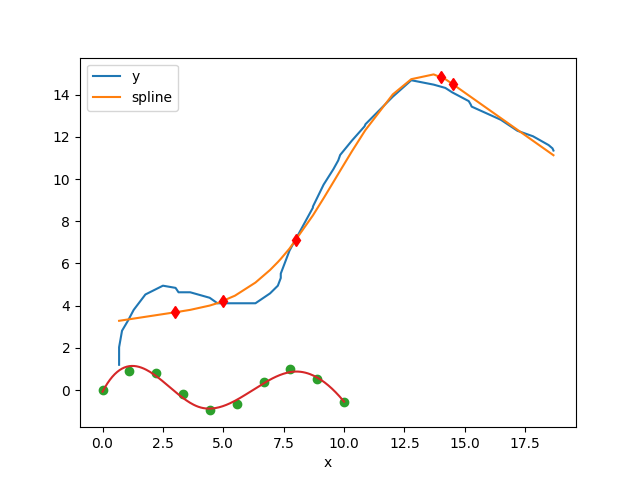
Alttaki kodlar tüm eğrinin verideki her noktayı ilmik olarak görmesi gerektiğine göre yazılmıştır, yani her veri noktası aynı zamanda bir ilmiktir.
import numpy as np
def Splines(data):
np1=len(data)
n=np1-1
X,Y = zip(*data)
X = [float(x) for x in X]
Y = [float(y) for y in Y]
a = Y[:]
b = [0.0]*(n)
d = [0.0]*(n)
h = [X[i+1]-X[i] for i in xrange(n)]
alpha = [0.0]*n
for i in xrange(1,n):
alpha[i] = 3/h[i]*(a[i+1]-a[i]) - 3/h[i-1]*(a[i]-a[i-1])
c = [0.0]*np1
L = [0.0]*np1
u = [0.0]*np1
z = [0.0]*np1
L[0] = 1.0; u[0] = z[0] = 0.0
for i in xrange(1,n):
L[i] = 2*(X[i+1]-X[i-1]) - h[i-1]*u[i-1]
u[i] = h[i]/L[i]
z[i] = (alpha[i]-h[i-1]*z[i-1])/L[i]
L[n] = 1.0; z[n] = c[n] = 0.0
for j in xrange(n-1, -1, -1):
c[j] = z[j] - u[j]*c[j+1]
b[j] = (a[j+1]-a[j])/h[j] - (h[j]*(c[j+1]+2*c[j]))/3
d[j] = (c[j+1]-c[j])/(3*h[j])
splines = []
for i in xrange(n):
splines.append((a[i],b[i],c[i],d[i],X[i]))
return splines,X[n]
def splinesToPlot(splines,xn,res):
n=len(splines)
perSpline = int(res/n)
if perSpline < 3: perSpline = 3
X=[]
Y=[]
for i in xrange(n-1):
S = splines[i]
x0 = S[4]
x1 = splines[i+1][4]
x = np.linspace(x0,x1,perSpline)
for xi in x:
X.append(xi)
h=(xi-S[4])
Y.append(S[0]+S[1]*h + S[2]*h**2 + S[3]*h**3)
S=splines[n-1]
x=np.linspace(S[4],xn,perSpline)
for xi in x:
X.append(xi)
h=(xi-S[4])
Y.append(S[0]+S[1]*h + S[2]*h**2 + S[3]*h**3)
return X,Y
import Spline
x = lambda n: np.linspace(-1,1,n)
f = lambda x: np.cos(np.sin(np.pi*x))
n = 5
E=200
data = zip(x(n),f(x(n)))
splines,xn = Spline.Splines(data)
X,Y = Spline.splinesToPlot(splines,xn,E)
plt.plot(X,Y,'r--')
plt.plot(x(300),f(x(300)),'k')
plt.savefig('compscieng_1_21_04.png')
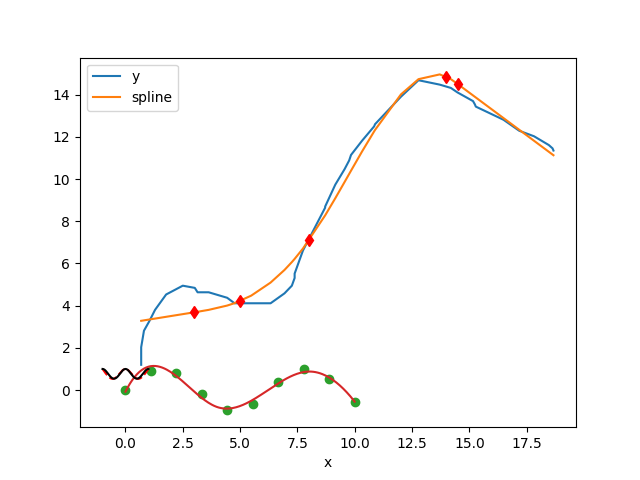
Bir diğer örnek
import numpy as np
from LUdecomp3 import *
def curvatures(xData,yData):
n = len(xData) - 1
c = np.zeros(n)
d = np.ones(n+1)
e = np.zeros(n)
k = np.zeros(n+1)
c[0:n-1] = xData[0:n-1] - xData[1:n]
d[1:n] = 2.0*(xData[0:n-1] - xData[2:n+1])
e[1:n] = xData[1:n] - xData[2:n+1]
k[1:n] =6.0*(yData[0:n-1] - yData[1:n]) \
/ (xData[0:n-1] - xData[1:n]) \
-6.0*(yData[1:n] - yData[2:n+1]) \
/ (xData[1:n] - xData[2:n+1])
LUdecomp3(c,d,e)
LUsolve3(c,d,e,k)
return k
def evalSpline(xData,yData,k,x):
def findSegment(xData,x):
iLeft = 0
iRight = len(xData)- 1
while 1:
if (iRight-iLeft) <= 1: return iLeft
i =(iLeft + iRight)/2
if x < xData[i]: iRight = i
else: iLeft = i
i = findSegment(xData,x)
h = xData[i] - xData[i+1]
y = ((x - xData[i+1])**3/h - (x - xData[i+1])*h)*k[i]/6.0 \
- ((x - xData[i])**3/h - (x - xData[i])*h)*k[i+1]/6.0 \
+ (yData[i]*(x - xData[i+1]) - yData[i+1]*(x - xData[i]))/h
return y
if __name__ == "__main__":
xData = np.array([1,2,3,4,5],float)
yData = np.array([0,1,0,1,0],float)
k = curvatures(xData,yData)
x = 1.5
print("y =",evalSpline(xData,yData,k,x))
import pandas as pd, cubicSpline
df = pd.read_csv('in.csv')
res = cubicSpline.curvatures(np.array(df.x), np.array(df.y))
print res
[ 0. -2.27960615 0.5983445 -2.14369027 -0.5421918 -0.9485407
4.83823742 1.40244849 -0.82589911 -1.3439826 2.52298704 0. ]
Kaynaklar
[1] Beu, Introduction to Numerical Programming A Practical Guide for Scientists and Engineers Using Python and C/C++
[2] Ruppert, Semiparametric Regression
[3] Harrell, Regression Modeling Strategies, 2nd Edition
[4] Bayramlı, Lineer Cebir, Ders 16
[5] Bayramlı, İstatistik, Lineer Regresyon
[6] Bantis, Restricted Cubic Spline, https://uk.mathworks.com/matlabcentral/fileexchange/41241-restricted-cubic-spline
[7] Vrbik, MATH 2P20 NUMERICAL ANALYSIS I Lecture Notes, http://spartan.ac.brocku.ca/~jvrbik/MATH2P20/notes.pdf
[8] Ertel, Advanced Mathematics for Engineers Lecture No. 14, http://www.youtube.com/watch?v=3rHBCglD1LQ
[9] Ertel, Advanced Mathematics for Engineers Lecture No. 15, http://www.youtube.com/watch?v=nA0YpqraP9A
[10] Recktenwald, Numerical Methods with MATLAB Implementations and Applications
[11] Bayramlı, Lineer Cebir, Ders 4
Yukarı